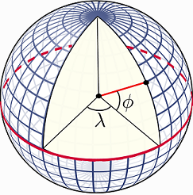

Часть 1. Базовые концепты
Александр Шелудков
25 07 2018
 Source: https://ru-geography.livejournal.com
Source: https://ru-geography.livejournal.com
Everything is related to everything else. But near things are more related than distant things.
Waldo R. Tobler
1.1. Пространственные явления и данные
Расстояние - направление - пространственные отношения - географическое положение
Пространственные явления одновременно могут рассматриваться: либо как набор дискретных объектов - точек, линий, полигонов, либо как непрерывное поле, внутри которого есть зоны большей и меньшей интенсивности (например, высота, температура, плотность населения и пр.).
Двум типам явлений соответствуют два типа пространственных данных:
* векторные (spatial objects)
* растровые (continuous phenomena)

Source: http://sedac.ciesin.columbia.edu/data/collection/gpw-v3/methods/grid
1.2. Система координат и проекция
Естественная система координат (Coordinate Reference System или CRS) для географических данных - угловая (в градусах). Широта (latitude) - это угол, под которым линия, проведенная через точку на поверхности Земли, пересекает плоскость экватора в центре Земли. Долгота (longitude) - это угол между нулевым меридианом и меридианом, который проходит через точку на поверхности Земли.

Source: http://rspatial.org/spatial/rst/6-crs.html
Но так как реальная форма Земного шара далека от идеальной сферы, для расчетов используются ее модели - датумы - сфероиды с приплюснутыми полюсами и выпуклыми экваторами.

Source: https://imgur.com/gallery/DkSPDph
Самая распространенная модель Земли в ГИС - WGS84 (World Geodesic System 1984). С ней работают GPS-навигаторы, google, OSM, yandex и др. Существуют датумы и более сложной формы, созданные для отображения конкретных стран и регионов. В России используют систему координат Pulkovo-1942, которая базируется на элипсоиде Красовского. Таким образом, если вы передаете координаты точки, необходимо уточнять, по отношению к какому датуму они вычислены.
Географические системы координат (ГСК) удобны для создания и для хранения данных, однако если вам необходимо сделать на основе этих данных карту либо провести вычисления (расстояния, площади), то данные необходимо “положить” на плоскость. Эта процедура называется проецированием: с помощью математической формулы вы пересчитываете координаты из угловых в метрические. Выбор проекции зависит от региона (широты). Самая распространенные проекции - UTM (Universal Transverse Mercator) и ГК (Гаусс-Крюгер). Обе базируются на поперечной проекции Меркатора.
Равноугольная цилиндрическая проекция Меркатора 
Source: https://ru.wikipedia.org/wiki/Проекция_Меркатора
С системами координат можно работать в открытой библиотеке PROJ.4.
PROJ.4 notation - это формат записи данных о CRS, который, в том числе, используется в R.
Наиболее широко используемые CRS обозначают также EPSG-кодом (задание: найти расшифровку EPSG). Например, WGS84 кодируется как EPSG:4326, а в PROJ.4 notation выглядит как +proj=longlat +ellps=WGS84 +datum=WGS84 +no_defs
Посмотреть/почитать:
Суша. Студия Артемия Лебедева
GIS-Lab: Часто задаваемые вопросы по координатам, проекциям, системам координат
R Spatial: Coordinate Reference Systems
Spatial Reference